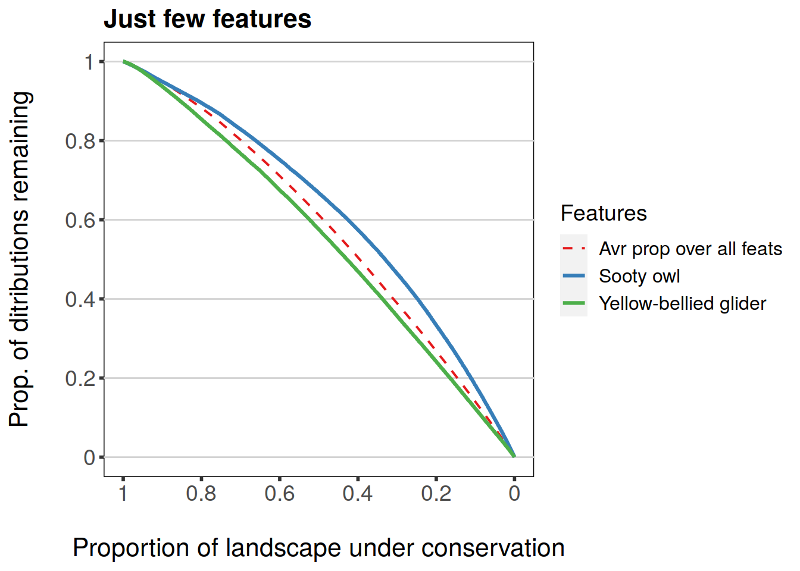
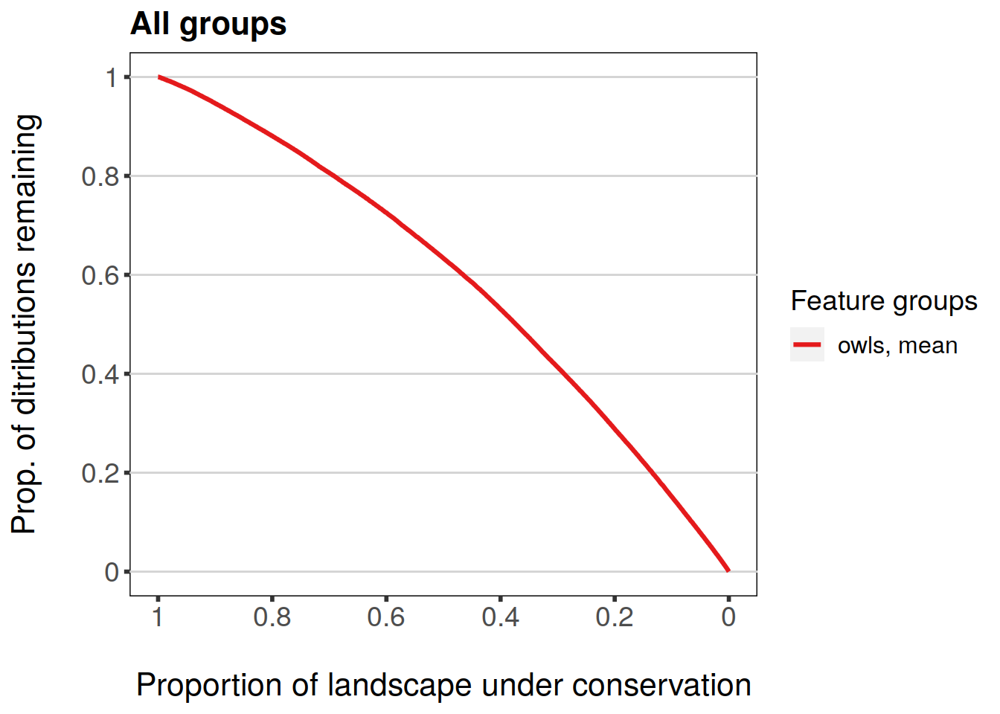
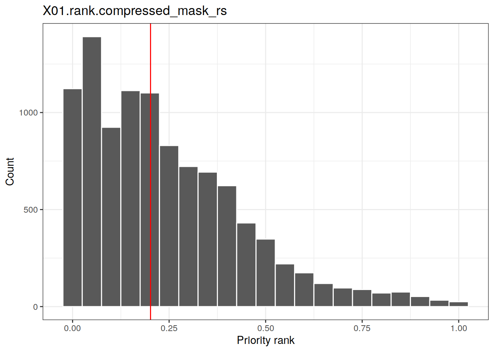

Working with Zonation results
Joona Lehtomäki
2020-05-17
Source:vignettes/zonator-results.Rmd
zonator-results.Rmd1. Introduction to working with Zonation results
First, let’s set up the scene. For the examples below to work, make sure you have installed zdat package. If not, do the following:
install.packages('zdat', repos='https://jlehtoma.github.io/drat/', type='source')
Now we start working with zonator.
library(zonator) # Start by creating a project using the tutorial data setup.dir <- system.file("extdata/basic", package = "zdat") tutorial.project <- load_zproject(setup.dir) # Get a specific variant, 01_core_area_zonation variant.caz <- get_variant(tutorial.project, "01") # Let's also rename the features and groups while we're at it featurenames(variant.caz) <- c("Koala", "Masked.owl", "Powerful.owl", "Tiger.quoll", "Sooty.owl", "Squirrel.glider", "Yellow-bellied.glider") groupnames(variant.caz) <- c("1" = "mammals", "2" = "owls")
Each variant can either already have results (i.e. Zonation run has completed) or then not. Which results exactly are available can be determined by using method has_results().
has_results(variant.caz)
## $curves
## [1] TRUE
##
## $grp.curves
## [1] TRUE
##
## $rank
## [1] TRUE
##
## $wrscr
## [1] FALSE
##
## $prop
## [1] FALSE
##
## $ppa.lsm
## [1] FALSE
##
## $features.info
## [1] TRUEValue TRUE indicates that Zonation has already been run and results are available and FALSE indicates that results are not available.
Results of a given variant - if present - can be extracted using results(). The resulting object will be an instance of Zresults class.
results.caz <- results(variant.caz)
Object results.caz can in turn be queried with various dedicated methods described in more detail below.
2. Performance curves
2.1 Working with performance data
Raw curves data (with or without groups) can be extracted from the variant or results using curves(). Optional argument groups defines whether feature or group specific curves are returned. If you don’t need every feature or aggregate statistic, you can also get the data for particular features.
## pr_lost cost min_pr ave_pr w_pr ext1 ext2 Koala Masked.owl Powerful.owl Tiger.quoll Sooty.owl
## 1 0.00002 110280 1.00000 1.00000 1.00000 0e+00 0.00000 1.000 1.000 1.000 1 1.000
## 2 0.00102 110170 0.99959 0.99976 0.99976 3e-05 0.00006 1.000 1.000 1.000 1 1.000
## 3 0.00201 110060 0.99915 0.99949 0.99949 4e-05 0.00013 0.999 1.000 0.999 1 0.999
## 4 0.00301 109950 0.99866 0.99918 0.99918 5e-05 0.00021 0.999 1.000 0.999 1 0.999
## 5 0.00401 109840 0.99813 0.99883 0.99883 6e-05 0.00029 0.998 0.999 0.998 1 0.999
## 6 0.00501 109730 0.99757 0.99847 0.99847 6e-05 0.00038 0.998 0.999 0.998 1 0.998
## Squirrel.glider Yellow-bellied.glider
## 1 1.000 1.000
## 2 1.000 1.000
## 3 0.999 1.000
## 4 0.999 0.999
## 5 0.998 0.999
## 6 0.998 0.999# Note! Using curves() variant.caz will work as well feature.curves.caz <- curves(variant.caz) head(feature.curves.caz)
## pr_lost cost min_pr ave_pr w_pr ext1 ext2 Koala Masked.owl Powerful.owl Tiger.quoll Sooty.owl
## 1 0.00002 110280 1.00000 1.00000 1.00000 0e+00 0.00000 1.000 1.000 1.000 1 1.000
## 2 0.00102 110170 0.99959 0.99976 0.99976 3e-05 0.00006 1.000 1.000 1.000 1 1.000
## 3 0.00201 110060 0.99915 0.99949 0.99949 4e-05 0.00013 0.999 1.000 0.999 1 0.999
## 4 0.00301 109950 0.99866 0.99918 0.99918 5e-05 0.00021 0.999 1.000 0.999 1 0.999
## 5 0.00401 109840 0.99813 0.99883 0.99883 6e-05 0.00029 0.998 0.999 0.998 1 0.999
## 6 0.00501 109730 0.99757 0.99847 0.99847 6e-05 0.00038 0.998 0.999 0.998 1 0.998
## Squirrel.glider Yellow-bellied.glider
## 1 1.000 1.000
## 2 1.000 1.000
## 3 0.999 1.000
## 4 0.999 0.999
## 5 0.998 0.999
## 6 0.998 0.999# Get just 2 species duo.curves.caz <- curves(results.caz, cols = c("Koala", "Tiger.quoll")) head(duo.curves.caz)
## pr_lost Koala Tiger.quoll
## 1 0.00002 1.000 1
## 2 0.00102 1.000 1
## 3 0.00201 0.999 1
## 4 0.00301 0.999 1
## 5 0.00401 0.998 1
## 6 0.00501 0.998 1Columns are exactly the same as in Zonation curves output file. Note also that the actual feature columns are named according to feature names in the Zvariant object these results were derived from. Thus whatever names you assigned to features prior to extracting the results will be also seen here.
Let’s see what the group curves data looks like as a whole or for individual groups:
# Get group-specific curves feature.grp.curves.caz <- curves(results.caz, groups = TRUE) head(feature.grp.curves.caz)
## pr_lost cost min.mammals mean.mammals max.mammals w.mean.mammals ext2.mammals min.owls mean.owls max.owls
## 1 0.00002 110280 1.000 1.00000 1 1.00000 NA 1.000 1.0000000 1.000
## 2 0.00102 110170 1.000 1.00000 1 1.00000 NA 1.000 1.0000000 1.000
## 3 0.00201 110060 0.999 0.99950 1 0.99950 NA 0.999 0.9993333 1.000
## 4 0.00301 109950 0.999 0.99925 1 0.99925 NA 0.999 0.9993333 1.000
## 5 0.00401 109840 0.998 0.99875 1 0.99875 NA 0.998 0.9986667 0.999
## 6 0.00501 109730 0.998 0.99875 1 0.99875 NA 0.998 0.9983333 0.999
## w.mean.owls ext2.owls
## 1 1.0000000 NA
## 2 1.0000000 NA
## 3 0.9993333 NA
## 4 0.9993333 NA
## 5 0.9986667 NA
## 6 0.9983333 NA# Get all the aggregate stats for owls owls.grp.curves.caz <- curves(results.caz, groups = TRUE, cols = c("min.owls", "mean.owls", "max.owls", "w.mean.owls", "ext2.owls")) head(owls.grp.curves.caz)
## pr_lost min.owls mean.owls max.owls w.mean.owls ext2.owls
## 1 0.00002 1.000 1.0000000 1.000 1.0000000 NA
## 2 0.00102 1.000 1.0000000 1.000 1.0000000 NA
## 3 0.00201 0.999 0.9993333 1.000 0.9993333 NA
## 4 0.00301 0.999 0.9993333 1.000 0.9993333 NA
## 5 0.00401 0.998 0.9986667 0.999 0.9986667 NA
## 6 0.00501 0.998 0.9983333 0.999 0.9983333 NAOften a particular range of cell removal process is more interesting than the whole range. curves() has arguments lost.lower and lost.upper to define a specific range:
# Get performance values for 2 species for a range between 60% and 75% of # landscape lost duo.curves.caz.range <- curves(results.caz, cols = c("Koala", "Tiger.quoll"), lost.lower = 0.6, lost.upper = 0.75) head(duo.curves.caz.range)
## pr_lost Koala Tiger.quoll
## 1 0.60047 0.489 0.509
## 2 0.60147 0.488 0.508
## 3 0.60247 0.486 0.506
## 4 0.60347 0.485 0.505
## 5 0.60446 0.484 0.504
## 6 0.60546 0.483 0.503tail(duo.curves.caz.range)
## pr_lost Koala Tiger.quoll
## 145 0.74410 0.326 0.338
## 146 0.74510 0.325 0.337
## 147 0.74610 0.324 0.335
## 148 0.74710 0.323 0.334
## 149 0.74809 0.322 0.333
## 150 0.74909 0.320 0.332Sometimes you might also be interested in performance values of features at specific levels of landscape protection. For example, how much of the original occurrence levels are remaining when 25%, 50%, and 75% of landscape is lost. Method performance() can give you exactly this information.
# Define the levels of landscape lost lost.levels <- c(0.25, 0.50, 0.75) # Notice that performance operates with Zresults-object performance(results.caz, lost.levels)
## pr_lost Koala Masked.owl Powerful.owl Tiger.quoll Sooty.owl Squirrel.glider Yellow-bellied.glider
## 1 0.25037 0.851 0.853 0.816 0.900 0.865 0.813 0.811
## 2 0.50073 0.601 0.633 0.598 0.622 0.667 0.582 0.575
## 3 0.75009 0.319 0.345 0.312 0.330 0.403 0.300 0.299# Same can be done for groups performance(results.caz, lost.levels, groups = TRUE)
## pr_lost min.mammals mean.mammals max.mammals w.mean.mammals ext2.mammals min.owls mean.owls max.owls w.mean.owls
## 1 0.25037 0.811 0.84375 0.900 0.84375 NA 0.816 0.8446667 0.865 0.8446667
## 2 0.50073 0.575 0.59500 0.622 0.59500 NA 0.598 0.6326667 0.667 0.6326667
## 3 0.75009 0.299 0.31200 0.330 0.31200 NA 0.312 0.3533333 0.403 0.3533333
## ext2.owls
## 1 NA
## 2 NA
## 3 NAPro tip! If you’re a heavy user of Hadley Wickham’s excellent ggplot2 package you might a lot of time reshaping your data. Method performance() also has an optional argument melted which if set TRUE will make the method return performance data in a melted format and thus readily suitable for ggplot2-plotting (see below for a plotting example).
# Define the levels of landscape lost lost.levels <- c(0.25, 0.50, 0.75) # Notice that performance operates with Zresults-object performance(results.caz, lost.levels, melted = TRUE)
## feature pr.lost perf.levels
## 1 Koala 0.25 0.851
## 2 Masked.owl 0.25 0.853
## 3 Powerful.owl 0.25 0.816
## 4 Tiger.quoll 0.25 0.900
## 5 Sooty.owl 0.25 0.865
## 6 Squirrel.glider 0.25 0.813
## 7 Yellow-bellied.glider 0.25 0.811
## 8 Koala 0.50 0.601
## 9 Masked.owl 0.50 0.633
## 10 Powerful.owl 0.50 0.598
## 11 Tiger.quoll 0.50 0.622
## 12 Sooty.owl 0.50 0.667
## 13 Squirrel.glider 0.50 0.582
## 14 Yellow-bellied.glider 0.50 0.575
## 15 Koala 0.75 0.319
## 16 Masked.owl 0.75 0.345
## 17 Powerful.owl 0.75 0.312
## 18 Tiger.quoll 0.75 0.330
## 19 Sooty.owl 0.75 0.403
## 20 Squirrel.glider 0.75 0.300
## 21 Yellow-bellied.glider 0.75 0.2992.2 Plotting performance curves
To make plotting examples more interesting, let’s use also another variant that uses Zonation’s masking capability.
# Variant: 05_hierarchical_removal_mask variant.mask <- get_variant(tutorial.project, "05") featurenames(variant.mask) <- c("Koala", "Masked.owl", "Powerful.owl", "Tiger.quoll", "Sooty.owl", "Squirrel.glider", "Yellow-bellied.glider") labels <- c("mammals", "owls") names(labels) <- c(1, 2) groupnames(variant.mask) <- labels results.mask <- results(variant.mask) feature.curves.mask <- curves(results.mask) feature.grp.curves.mask <- curves(results.mask, groups = TRUE)
Performance data (curves) can also be easily plotted, feature- or group-wise:
plot(feature.curves.caz)
Plotting-methods for ZCurvesDataFrame and ZGroupCurvesDataFrame classes include a couple of convenience arguments as well. By default, the scale on x-axis ranges from 0 to 1 and has a label “Prop. of landscape lost”. The other way of presenting the x-axis is to have it range from 1 to 0 and label it “Proportion of landscape under conservation”. This behavior can be controlled by using the argument invert.x for plot-method. The title of the plot can be set using main-argument.
plot(feature.curves.caz, invert.x = TRUE, main = "All features")
Argument subs can have a character vector of feature names to be plotted, i.e. a subset of all features. Different overall statistics can also be plotted. Statistics supported are: mean, min, and w.mean for feature-specific curves. Each of these is a logical argument that can be set to TRUE/FALSE. They correspond to “Average proportion remaining over all features”, “Minimum proportion remaining over all features”, and “Weighted average proportion remaining over all features” respectively.
plot(feature.curves.caz, invert.x = TRUE, main = "Just few features", subs = c('Yellow-bellied.glider', 'Sooty.owl'), mean = TRUE)

Group-specific curves can be plotted in similar fashion. Note that plotting group curves also respect the group names you may have set.
plot(feature.grp.curves.caz, invert.x = TRUE, main = "All groups")

Subsetting works the same as with individual features.

Both feature- and group-specific curve plotting methods also have an argument called monochrome. Setting this argument to TRUE will use only monochrome colours which may be useful e.g. for publication figures.
plot(feature.grp.curves.caz, invert.x = TRUE, main = "All groups", monochrome = TRUE)
Group plotting also has a set of statistics which can be plotted, but the behavior is slightly different to that of features. What is plotted by default are group-specific mean values. Other statistics are min, max, and w.mean which correspond to “Minimum proportion remaining for a feature within group”, “Maxmimum proportion remaining for a feature within group”, and “Weighted average proportion remaining for group”. Note that mean will always be TRUE unless it’s explicitly set to FALSE.
plot(feature.grp.curves.mask, invert.x = TRUE, main = "All groups", mean = TRUE, min = TRUE, max = TRUE)
2.3 Plotting performance levels
If you want to summarize how much each feature has retained it’s occurrence level in a given stage of the cell removal process, you can easily created bar plots out of selected performance levels. For example, if you’d like to know how much of the original occurrence level each of species in our tutorial data has left when 10% percent of the landscape is under conservation, you could do the following:
library(ggplot2) # NOTE: we're using melted=TRUE here occr.remaining <- performance(results.caz, c(0.9, 0.95, 0.98), melted = TRUE) ggplot(occr.remaining, aes(x = factor(feature), y = perf.levels, fill = factor(pr.lost))) + geom_bar(position = "dodge", stat = "identity")
3. Raster results
3.1. Priority rank rasters
One of the main outputs of a Zonation analysis is the priority rank rasters which gives each cell in the landscape a value [0, 1] indicating the final priority rank (0 = the lowest, 1 = the highest). Rank raster is part of Zresults object just as the performance curves above. Method rank_raster() can be used to get the rank raster object. The color scheme used is really up to the user, but having a consistent and expressive color scheme for all the results helps. zlegends() can be used for ready-to-go color schemes that can used when plotting the raster objects.
library(raster)
## Loading required package: sprank.caz <- rank_raster(results.caz) # Let's use a spectral color scheme designed for Zonation rank maps leg <- zlegend("spectral") plot(rank.caz, breaks = leg$values, col = leg$colors)
You can of course get all rank rasters individually from your project’s variants, but an alternative approach is to call rank_rasters() (note the plural in method name!) directly on your project object. This will result in a RasterStack object containing all the rank rasters as respective layers. If you want to plot all rank rasters in your project for comparison, you could do the following:
# RasterStack is returned all.ranks <- rank_rasters(tutorial.project) plot(all.ranks, breaks = leg$values, col = leg$colors, nc = 1)
Naturally, all methods defined for a RasterStack object are available. For example, checking the distributions of individual stack layers (i.e. rank rasters) and the correlation between the values of layers can be done using pairs(). Following example examines correlation between variants 1-3.
Values are sampled from the whole distribution of values to increase execution speed. Note also that we are using kendall as method for correlation.
Masking is another useful analysis tool. In the following example we are using the mask file mask_rs.tif shipping with Zonation basic tutorial in order to inspect the distribution of priorities within a subset of the landscape (i.e. protected areas, PAs). In the following example, note that method rank_raster() has been implemented for class Zvariant. In other words, you can call it on both your variant or results object. plot_hist() accepts two rasters as arguments: first is the rank raster and the second one is a mask raster. Histogram is then plotted based on the values of the rank raster within the mask raster.
pas.file <- system.file("extdata/data", "mask_rs.tif", package = "zdat") pas <- raster(pas.file) # Re-class zeros as NA pas[pas == 0] <- NA # Plot the histogram of rank.caz within mask raster plot_hist(x = rank.caz, pas, add.median = TRUE)
## Warning: Removed 349944 rows containing non-finite values (stat_bin).
rasterVis is another useful package for plotting raster data. For example, levelplot() can be used to plot data and show a marginal plot of of a function across each coordinate (here using mean):
library(rasterVis) # Note that breaks in the following are different from the previous maps levelplot(rank.caz, FUN.margin = mean, par.settings = rasterTheme(region = leg$colors))
## Warning in .local(x, data = data, ...): FUN.margin is deprecated. Use margin as a list instead.